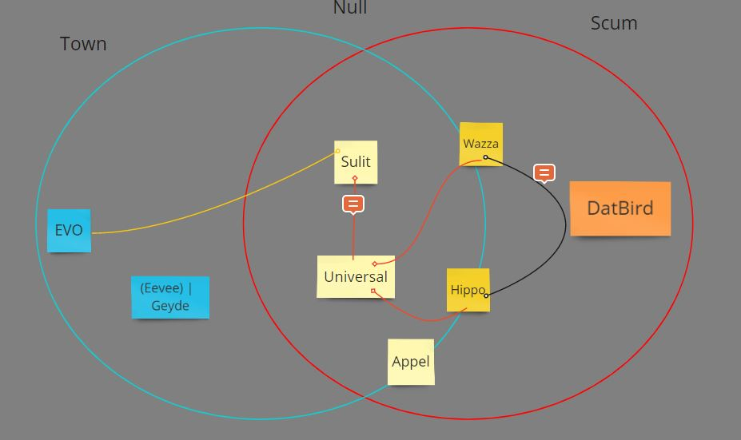

Lynch candidates are:
Wazza (for info)
Hippo (less info, but still info)
Sulit ( Not much info, but safer choice)
Universal ( pushed by my scumleans, so maybe not this)
I would prefer a datbird or sulit lynch since it does clear a few things up for me. But Wazza may also be on the table for some other info, though not as helpful as a dat or sulit lynch in my mind.
Dat is scumlocked. Sulit is a safe choice, if she’s scum then what? Not a lot of associations
Well I have a bit of a thought in my mind. Sulit, Dat, and Appel. Essentially, Katze and Sulit were going to powerwolf it so they can control thread conversation. Due to there being no mechanics that can clear people in this game, posting misleading reads or driving the thread can be 10x as more effective in this vanilla game than usual. With this, Dat also tried to powerwolf it to a certain degree, more flying off the radar. Appel would’ve been told to just not associate as much with them since if they do get found out, there wouldn’t be as strong as an association between them. But Appel would very much be coached by Katze, Sulit, and Dat so that they don’t spill too much information due to their new status.
I scumread both Sulit and Dat, though. You’re making quite a lot of assumptions based on me being coached, but is that all you have? I don’t remember if you were in the Poisonous FM, but I learned to make alright reads pretty fast, I suppose. At least people were surprised, even though I wasn’t very vocal since I was killed early on.
Also I’m pretty sure it is EoD rn
What info do Wazza & Hippo lynches give btw? Just a quick summary would be good
sigh
Reads (3)

This is actually something I’d point to as to why I sus you. Alongside this
You like Napoleon’s reads and posts yet undermine it with how he tends to follow thread and you also try to nullread Katze, something a new town would’ve either not commented on or townread depending on when you said this specifically. The reason behind this is that nullreading a scumread Katze slot would be very courageous for someone who is afraid of even shading or scumreading another player, since most of the time you wouldn’t actually do this due to not wanting to go against town narrative. The narrative around this time was that Katze was townlean I believe. Also this
To me, if Sulit flips scum this seems more like trying to drive attention away from the appelsiini vote than trying to apply pressure on a scum out of nowhere.
1 Like
Which by the way, you scumreading both Dat and Sulit yet not voting them is awfully suspicious. And this just goes on with my thought that doing that is just to distance yourself from them. Like I said, a huge part of my theory is that they did not want any association with you besides a few interactions since you were meant to play the long game.
I like these reads tbh
this is conflicting, wazza and hippo look like a scumteam to me, but appel is looking bad too, but if he is scum then at least 1 or both of the other two are town
Anyone who wants to lynch me will be seen as scum immediately.
im scum then
/vote Wazza-
1 Like